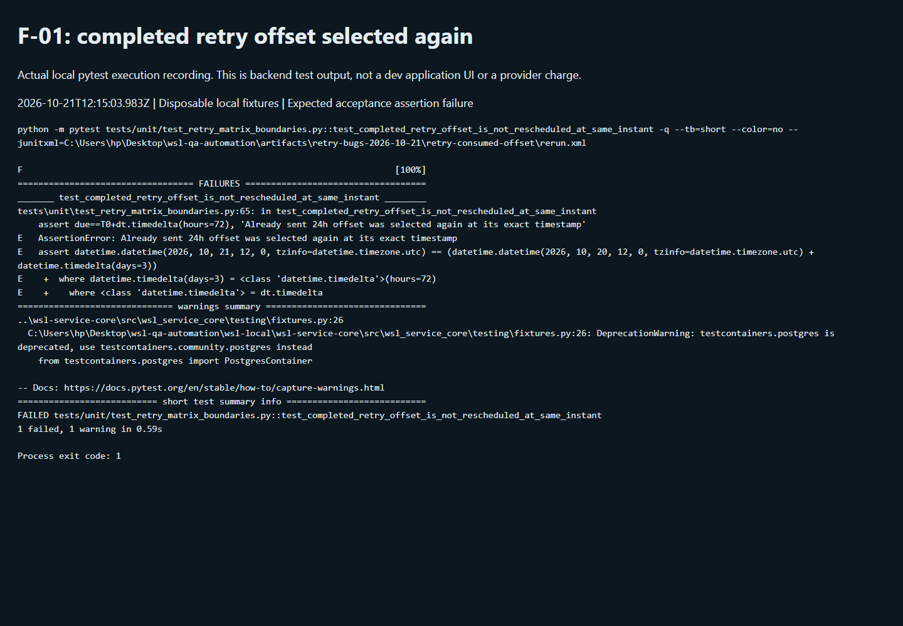

Payment retries · QA-RETRY-01 · Bug report · Not in Jira
Retry scheduler selects the completed 24-hour slot again at the exact boundary
21 October 2026 · P2 suggested · Local source / domain function
All four bug reports · Full 110-case execution · Download bug report
Summary
Reproduced: RET-028
After one configured retry is marked sent, next_retry_at can return the already-used 24-hour timestamp instead of the next 72-hour timestamp.
Impact: The scheduling calculation can reuse a completed slot. Whether this produces an extra provider attempt remains unproven; downstream claim and idempotency controls were not bypassed.
Evidence scope and limits
No duplicate Stripe collection was reproduced. This page records an exact-boundary function failure, not an observed customer double charge.
Priorities are QA suggestions. No Jira ticket, application fix, refund, or shared dev database/policy modification was made.
Recording and execution record
Actual backend test execution recording. This records a fresh pytest run with output streamed into a browser terminal viewer. It is not the dev application UI or a live processor attempt.
Started 2026-10-21T12:15:03.983Z; finished 2026-10-21T12:15:18.922Z. Exit code 1 is expected because the acceptance assertion reproduces the defect.
Recorded output · Fresh rerun XML · Execution metadata
Command and exact captured output
python -m pytest tests/unit/test_retry_matrix_boundaries.py::test_completed_retry_offset_is_not_rescheduled_at_same_instant -q --tb=short --color=no --junitxml=C:\Users\hp\Desktop\wsl-qa-automation\artifacts\retry-bugs-2026-10-21\retry-consumed-offset\rerun.xml
F [100%]
================================== FAILURES ===================================
_______ test_completed_retry_offset_is_not_rescheduled_at_same_instant ________
tests\unit\test_retry_matrix_boundaries.py:65: in test_completed_retry_offset_is_not_rescheduled_at_same_instant
assert due==T0+dt.timedelta(hours=72), 'Already sent 24h offset was selected again at its exact timestamp'
E AssertionError: Already sent 24h offset was selected again at its exact timestamp
E assert datetime.datetime(2026, 10, 21, 12, 0, tzinfo=datetime.timezone.utc) == (datetime.datetime(2026, 10, 20, 12, 0, tzinfo=datetime.timezone.utc) + datetime.timedelta(days=3))
E + where datetime.timedelta(days=3) = <class 'datetime.timedelta'>(hours=72)
E + where <class 'datetime.timedelta'> = dt.timedelta
============================== warnings summary ===============================
..\wsl-service-core\src\wsl_service_core\testing\fixtures.py:26
C:\Users\hp\Desktop\wsl-qa-automation\wsl-local\wsl-service-core\src\wsl_service_core\testing\fixtures.py:26: DeprecationWarning: testcontainers.postgres is deprecated, use testcontainers.community.postgres instead
from testcontainers.postgres import PostgresContainer
-- Docs: https://docs.pytest.org/en/stable/how-to/capture-warnings.html
=========================== short test summary info ===========================
FAILED tests/unit/test_retry_matrix_boundaries.py::test_completed_retry_offset_is_not_rescheduled_at_same_instant
1 failed, 1 warning in 0.59s
Process exit code: 1
Steps to reproduce
- Use version-16 rules: retries 24/72h, notices 24/72/120/168h, grace 168h, short-notice cutoff 10 days.
- Set first_failed_at to 2026-10-20 12:00 UTC, failure_class to retryable, retries_sent to 1, and deadline to T0+168h.
- Invoke the real next_retry_at function with now exactly T0+24h.
- Compare the returned due timestamp with T0+72h.
Expected versus actual
| Expected | Actual |
|---|---|
| T0 + 72 hours: 2026-10-23 12:00 UTC. | T0 + 24 hours: 2026-10-21 12:00 UTC, despite retries_sent=1. |
Technical investigation
Source: competition/domain/payment_retries.py:80 — next_retry_at
F-01 — Completed retry offset can be selected again at exact boundary - Matrix: RET-028. Suggested priority: P2, pending confirmation of impact through the complete result-consumer path. - Source: `wsl-competition-service/src/competition/domain/payment_retries.py:80`, `next_retry_at`. - Preconditions: version-16 policy, retryable failure, T0 = 20 October 2026 12:00 UTC, retry offsets 24 and 72 hours, grace 168 hours, `retries_sent=1`. - Reproduction: call the real function with `now=T0+24h` after the first retry is recorded as sent. - Expected: next due is 23 October 2026 12:00 UTC (T0+72h). - Actual: next due is 21 October 2026 12:00 UTC (T0+24h), the already-used offset. - Cause: the count only guards schedule exhaustion; the loop starts from the first configured offset and accepts `due >= now`. - Evidence: `boundaries.xml`, `test_completed_retry_offset_is_not_rescheduled_at_same_instant`, failed assertion retained. - Impact limit: this proves a scheduling calculation defect. A second provider charge was not demonstrated; worker claim/idempotency gates may reduce the end-to-end impact. - Backend direction: track consumed schedule positions explicitly and preserve skip-past behavior. Test first-failure handling, delayed answers, manual failures, skipped offsets, and exact-time redeliveries before changing count semantics.
Visual evidence

Acceptance criteria for a fix
- At the exact consumed offset, select the next unconsumed slot.
- Verify minus/exact/plus 1ms, exhausted schedules, skipped offsets, delayed outcomes, manual failures and idempotent dispatch.
Raw evidence and matrix traceability
1 original failed native assertions
test_completed_retry_offset_is_not_rescheduled_at_same_instant
def test_completed_retry_offset_is_not_rescheduled_at_same_instant():
"""Acceptance criterion RET-028: an already-sent offset must not be chosen again."""
due=next_retry_at(RULES,first_failed_at=T0,retries_sent=1,failure_class='retryable',deadline=D,now=T0+dt.timedelta(hours=24))
> assert due==T0+dt.timedelta(hours=72), 'Already sent 24h offset was selected again at its exact timestamp'
E AssertionError: Already sent 24h offset was selected again at its exact timestamp
E assert datetime.datetime(2026, 10, 21, 12, 0, tzinfo=datetime.timezone.utc) == (datetime.datetime(2026, 10, 20, 12, 0, tzinfo=datetime.timezone.utc) + datetime.timedelta(days=3))
E + where datetime.timedelta(days=3) = <class 'datetime.timedelta'>(hours=72)
E + where <class 'datetime.timedelta'> = dt.timedelta
tests\unit\test_retry_matrix_boundaries.py:65: AssertionError